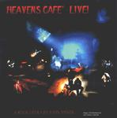

| Artist: | Art Rock Circus |
| Title: | Heavens Café Live! |
| Label: | Tributary Music Label 1944-70003-2 |
| Length(s): | 46 minutes |
| Year(s) of release: | ?? |
| Month of review: | [02/2002] |
| 1) | Last Smile Sunshine | 3.07 |
| 2) | Astralography | 3.41 |
| 3) | Heavens Café | 4.08 |
| 4) | Never Alone | 4.23 |
| 5) | Classical Man | 4.13 |
| 6) | Labyrinth | 7.12 |
| 7) | Tower Of Information | 7.58 |
| 8) | Again | 1.44 |
| 9) | Flowing Home | 1.40 |
| 10-11) The Dark | 6.12 | |
| 12) | Robins' Lullabye | 1.41 |
Astralography is heavier with a guitar that reminds of psychedelic music. The overaccented vocals are irritating, the other vocals are ratehr flat again. The "title track" sounds more theatrical with some nice violin, but gets to be quite commerical. The female singer is a good one with plenty of volume. The song itself is repetitively acoustic.
Never Alone is an easy going track, but not a boring one. Percussion, a lone guitar and mumbled vocals make for a nice atmosphere. The music gets more typical for musicals on Classical Man with overaccented spoken vocals. Recitation is also present, in addition to a gurgling bass, on Labyrinth.
Tower Of Information is one of the most appealing songs on the album with a melodic beginning and acoustic that remind of Hackett and/in Genesis. The violin sounds really sad on this one.
Mars rhtyhms we find on the short and tuneful Again. Lots of vocals through intertwine and on the whole a bit too plain and simple. After the merry Flowing Home we come to the more powerful The Dark which happens to be split over two tracks. The first of these is an intro the Great Gig In The Sky inspired second part. Well sung.
The closer is a short somewhat folky tune.